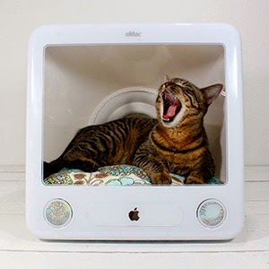
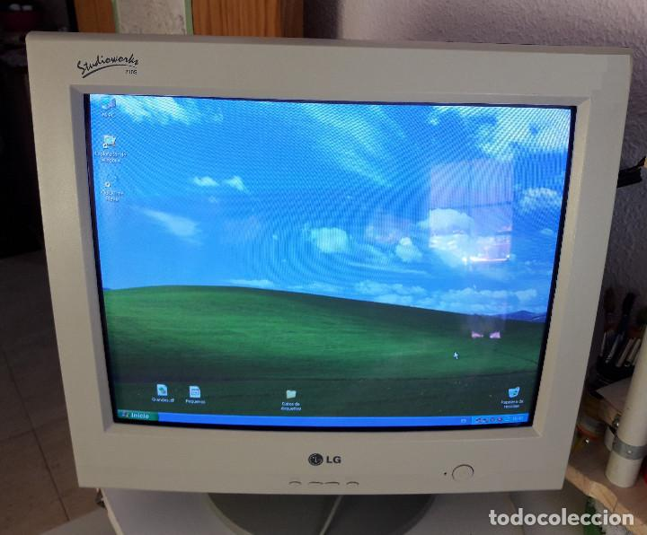
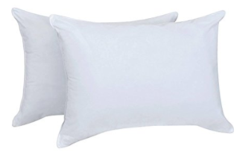

La casa de gatito
Materiales
-  Alguna computadora que no sirva
 Destornillador
Destornillador Alicate
Alicate Pintura a elcción
Pintura a elcción- almohada
Instrucciones
- Agarramos la computadora y con el destornillador lo abrimos
- Con el alicate , sacar todo lo que contiene por dentro
- Con la pintura cree el diseño que mas le guste (diseño a eleccion)
- Y cuando la pintura se seque , poner una almohada para que el gatito se sienta mas comodo , "COMO USTED EN SU CASA PROPIA"
- PRECAUCIÓN: ANTES HAGA REVISAR SU COMPUTADORA CON UN EXPERTO , ANTES DE EXTRAER TODO LO QUE CONTIENE.